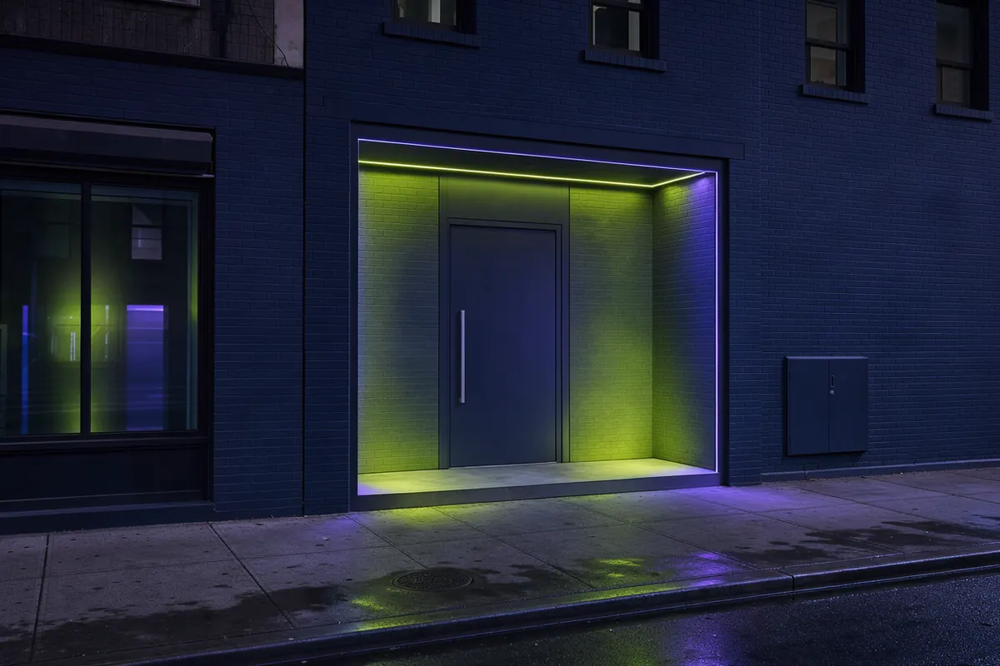

OCM
# 01 · Protocol 01Licensed & Compliant
Fully licensed by the New York State Office of Cannabis Management. Every product is lab-tested, properly labeled, and traceable from seed to sale.
You must be at least 21 years of age to view this site. Please verify your age to continue.
You must be 21 or older to enter this site.
Licensed by NY Office of Cannabis Management · Adult-Use Retail · 994 Atlantic Ave, Brooklyn, NY 11238 · Adults 21+ Only
Walk-in · Open daily10:00 AM – 10:00 PM
Browse the MenuBrooklyn's licensed adult-use cannabis dispensary at 994 Atlantic Avenue, Prospect Heights. Lab-tested flower, edibles, vapes, pre-rolls, concentrates & tinctures from New York-licensed cultivators. Walk-in only, 21+.
Live Menu · Shop In-Store
Browse live inventory from 994 Atlantic Avenue, then shop in person — every product is lab-tested and sourced from New York-licensed cultivators. Walk-in only, 21+.
Adult-Use 21+ · NYS OCM Licensed · 994 Atlantic Ave · Brooklyn
Mission Brief
Take N' Toke is more than a dispensary — we're a Brooklyn institution built by Brooklyn, for Brooklyn. Founded on the belief that legal cannabis should be accessible, educational, and rooted in community, we opened our doors at 994 Atlantic Avenue to bring Prospect Heights and surrounding neighborhoods a dispensary they can trust.
Our team of knowledgeable budtenders guides every customer — from first-time visitors to seasoned connoisseurs — through our curated selection. Every product is lab-tested and sourced from licensed New York cultivators.
Operating Protocols · 05 of 05
Five protocols govern every interaction, every product, every visit. Operational doctrine for a licensed NY dispensary.
Fully licensed by the New York State Office of Cannabis Management. Every product is lab-tested, properly labeled, and traceable from seed to sale.
Our team is trained in cannabinoid science, terpene profiles, and product pairing. We guide first-timers and connoisseurs alike to exactly what they need.
Locally owned and operated in Brooklyn. We reinvest in our neighborhoods and support social equity in the cannabis industry.
We curate flower, edibles, vapes, and concentrates from New York-licensed cultivators and processors. Lab-tested and properly labeled, every visit.
No hidden fees, no surprises. Clear pricing on every product with regular deals and loyalty rewards for returning customers.
The Canopy · 06 of 06
Signal / Promotions
Daily deals at 994 Atlantic Ave — in-store, while supplies last. Today is launch day.
Service Radius · 12 of 12
Scanning · Local Radius · 3.0 mi
TargetTAKE N' TOKE · HQ994 Atlantic Ave · Brooklyn NY 11238
Click any point — or pick a neighborhood below.
Field Notes

Everything you need to know before your first trip to a legal cannabis dispensary in New York.
Read
Understand the difference between sativa, indica, and hybrid strains — and what works best for you.
ReadStart low, go slow. Learn how to dose edibles safely for a great experience every time.
Read
Discover how terpenes shape the flavor, aroma, and effects of your favorite cannabis products.
ReadArrival Protocol
We get it — walking into a dispensary for the first time can feel intimidating. At Take N' Toke, we make it easy. Bring a valid government-issued ID showing you're 21 or older. Our friendly budtenders take care of the rest.
No medical card needed. No appointment necessary. Walk in, ask questions, discover what's right for you.
Loyalty program
Loyalty program launch date to be announced. Ask in-store for early enrollment details.
Coordinates · 40.6812° N · 73.9655° W
Atlantic Ave – Barclays Center (2, 3, 4, 5, B, D, N, Q, R) · Franklin Ave (C, S)
B65, B45 along Atlantic Avenue
Atlantic Terminal — steps from our door
Take N' Toke is a licensed adult-use cannabis dispensary operating under the regulations of the New York State Office of Cannabis Management (OCM). All products are intended for adults aged 21 and older. Cannabis products have not been evaluated by the FDA and are not intended to diagnose, treat, cure, or prevent any disease. Keep all cannabis products out of reach of children and pets. Do not drive or operate heavy machinery while under the influence of cannabis. Please consume responsibly.